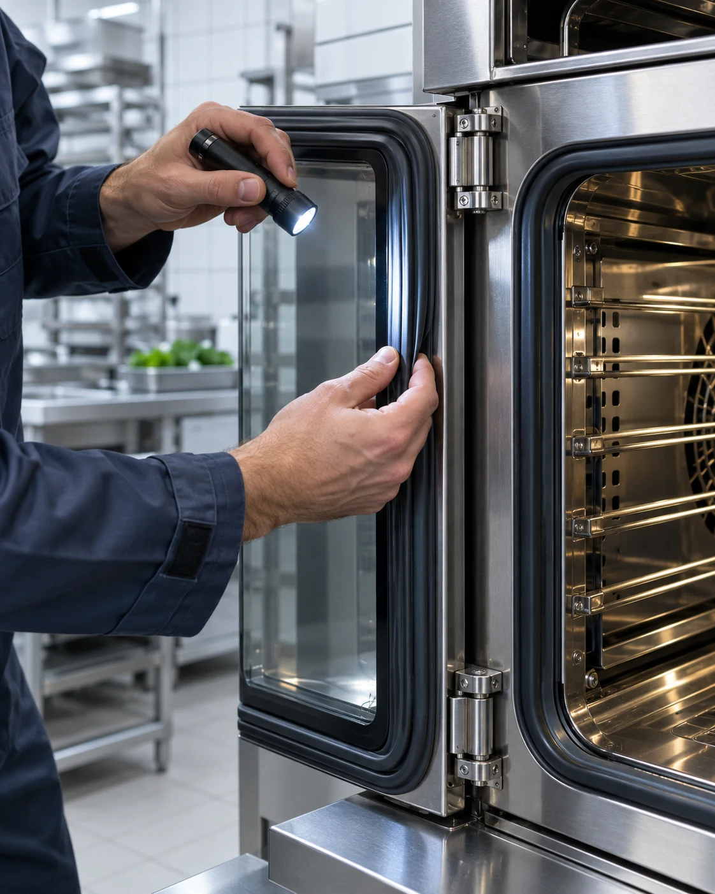
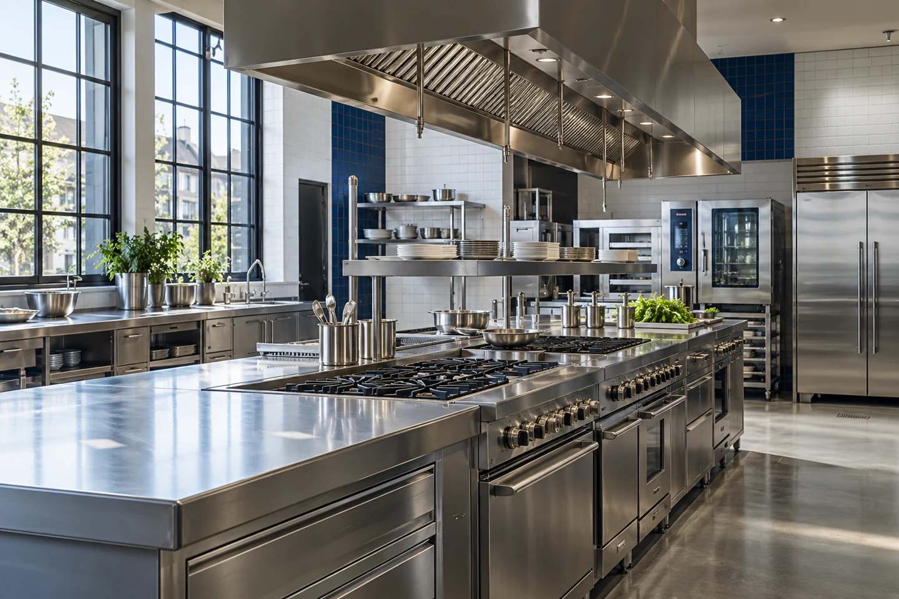
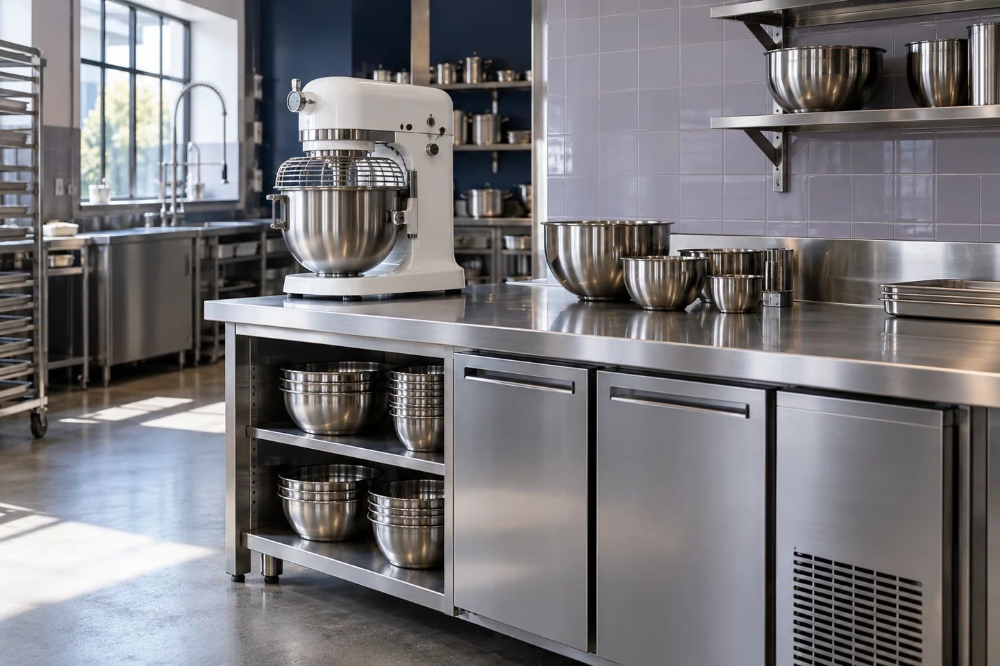

I.REPAIR & RESTORE
Restore the rhythm.
When a fault interrupts your kitchen, start with a clear assessment and a practical route back to service.
Thoughtful repairs. Attentive maintenance.
We take care of what’s behind your next great service.
Behind every plate is a whole world of equipment, people and preparation. MISE brings considered technical care to the parts your guests never see.
A practical repair when something stops. A thoughtful plan before it does. Always a clear conversation about what happens next.

I.When a fault interrupts your kitchen, start with a clear assessment and a practical route back to service.

II.Regular attention to wear, condition and performance. A little care before small issues become bigger ones.
Consider a care plan
III.Recurring faults, uneven results, unfamiliar sounds. Get to the cause before deciding on the right fix.
Kitchen care should feel clear, capable and considered. From your first description of a fault to the practical advice you take away.
Your kitchen has its own rhythm. Understanding it is where good service starts.
A defined scope and an agreed quote before the work begins.
Care recommendations that help you look after your equipment over time.
Explore the equipment behind the service.
One considered approach to the whole kitchen.
For the equipment that brings the heat.
Keeping the cold side of the kitchen in focus.
The clean finish that starts the next service.
For everything that happens before the first order.
Every kitchen works differently. Start with the equipment you rely on and the time that suits your operation. We’ll use it to shape a conversation.
A STARTING POINT, NOT A FIXED PACKAGE.2 equipment areasCooking line · Refrigeration
Preferred window: Before serviceScope, frequency and pricing are agreed after an equipment review. This creates a request preview only.
Yes. This concept is designed around the needs of restaurants, cafés, hotels, catering operations and other commercial kitchens.
Absolutely. A repair request can be a single visit. You can also use the care brief to explore a longer-term maintenance approach.
The equipment type, make and model if known, what’s happening and when it started. A photo or fault code can also help during a real service conversation.
No. This is an interactive homepage preview. The form creates a summary on your device; it doesn’t send, store or book anything.
A problem to solve or a plan to consider.
We’ll start by understanding what you need.
Interactive preview — no bookings are sent.
Your preview is ready below. No request has been sent or booking made.